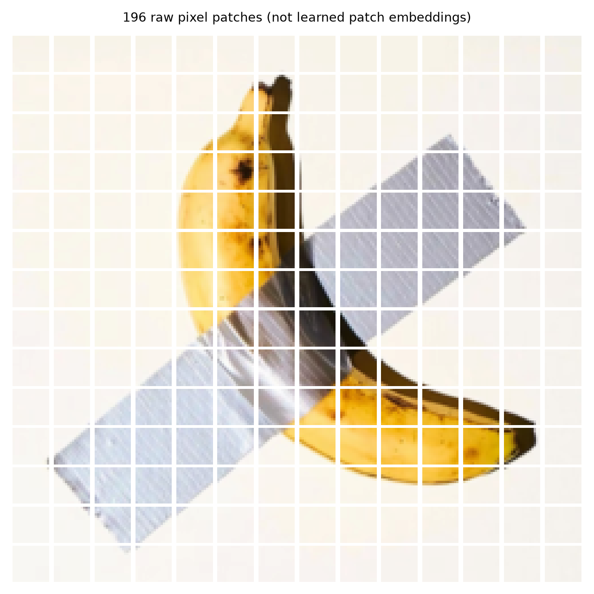
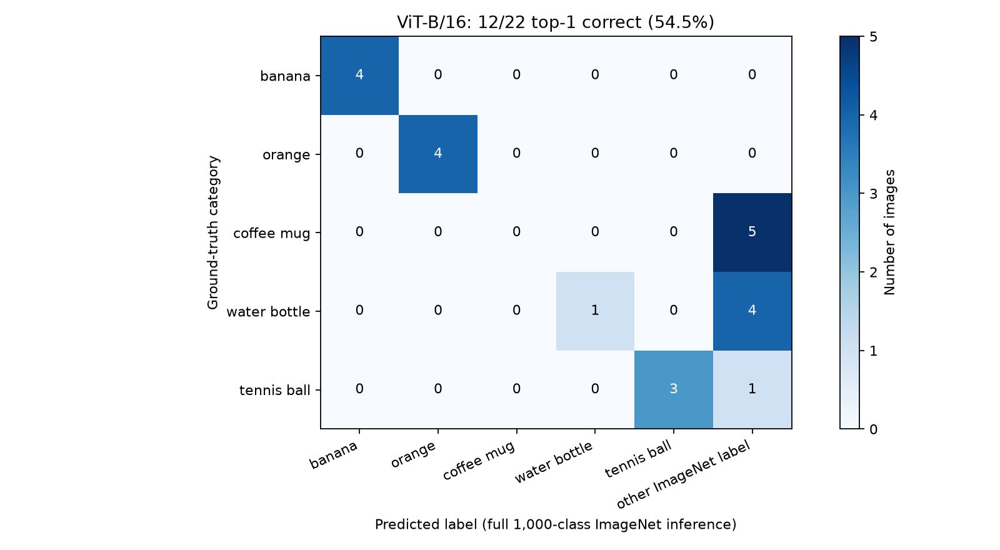
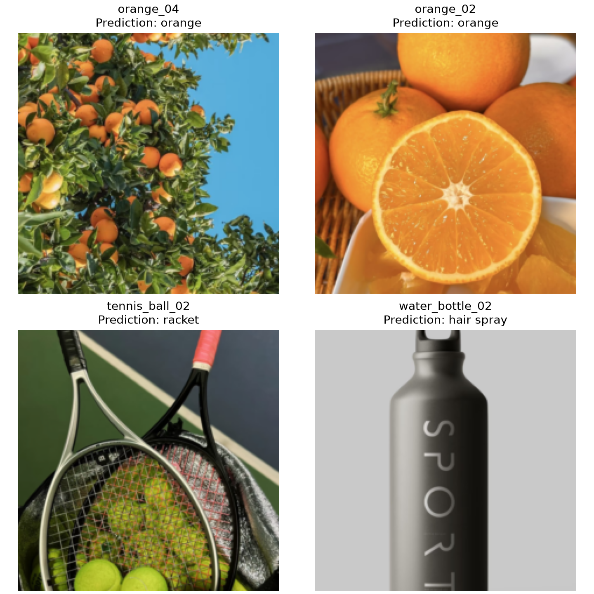
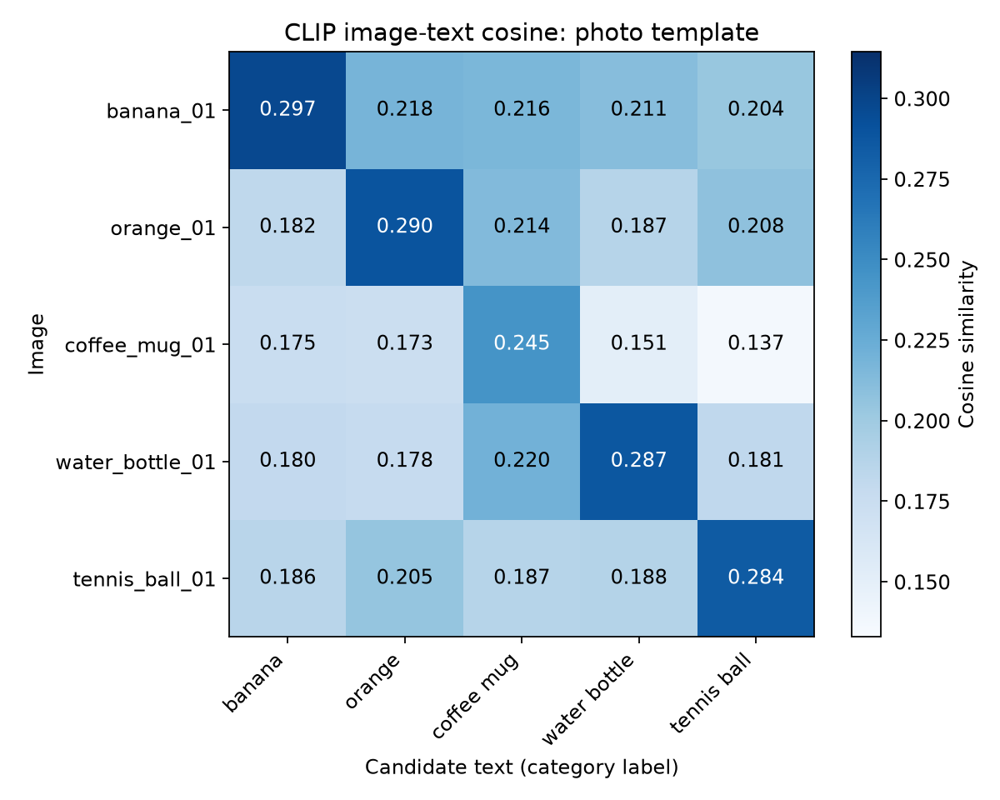
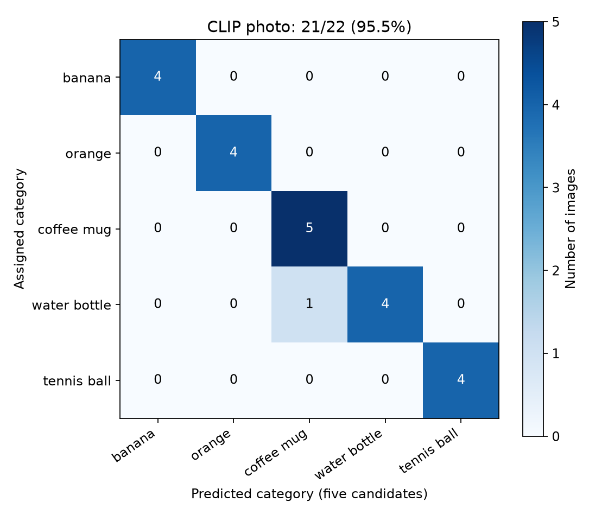
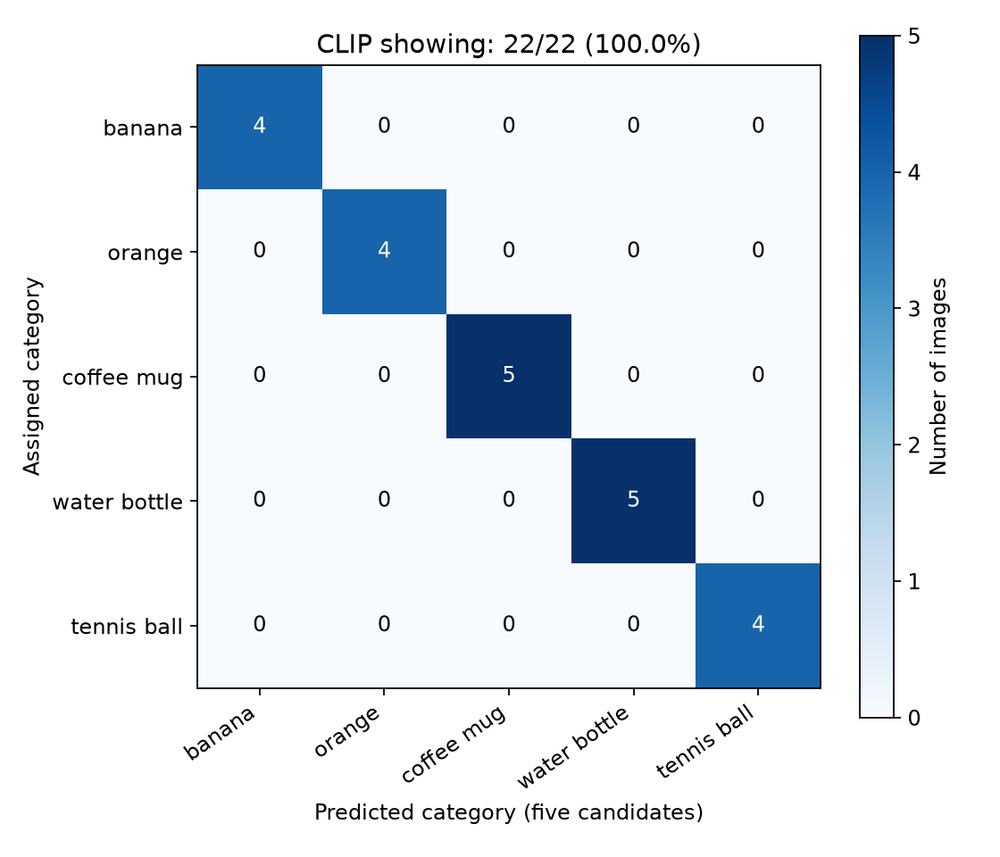
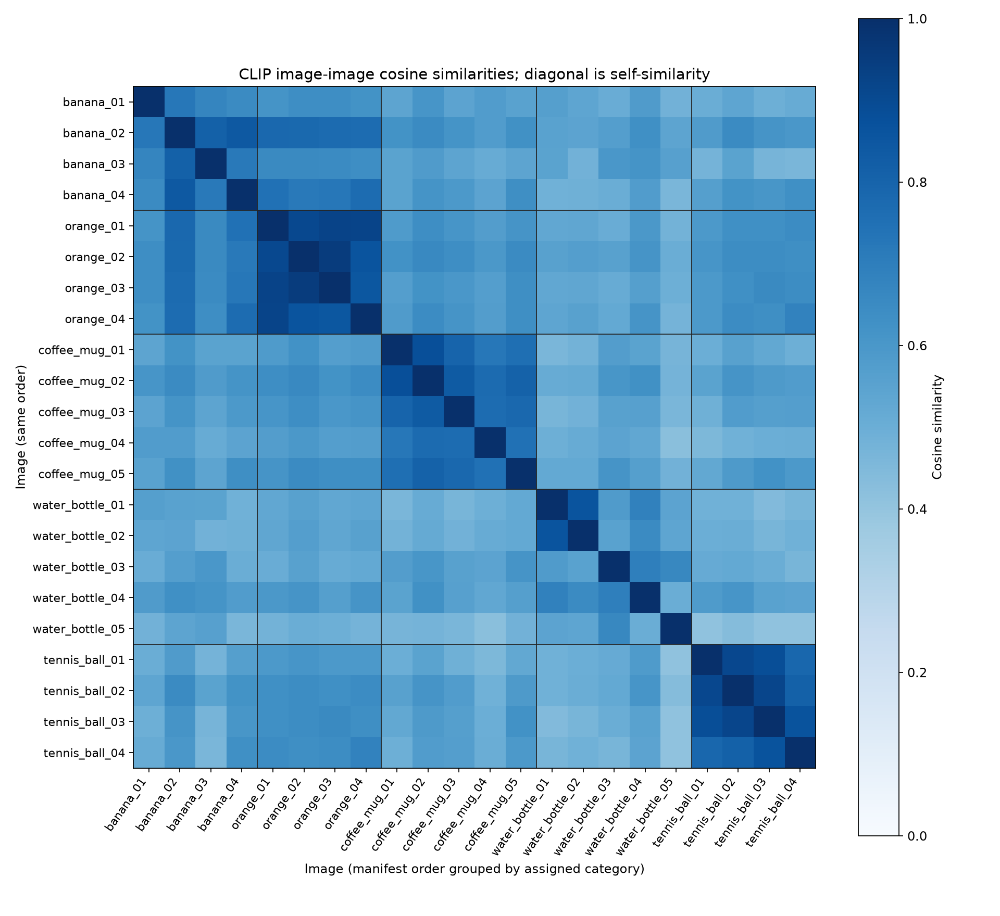
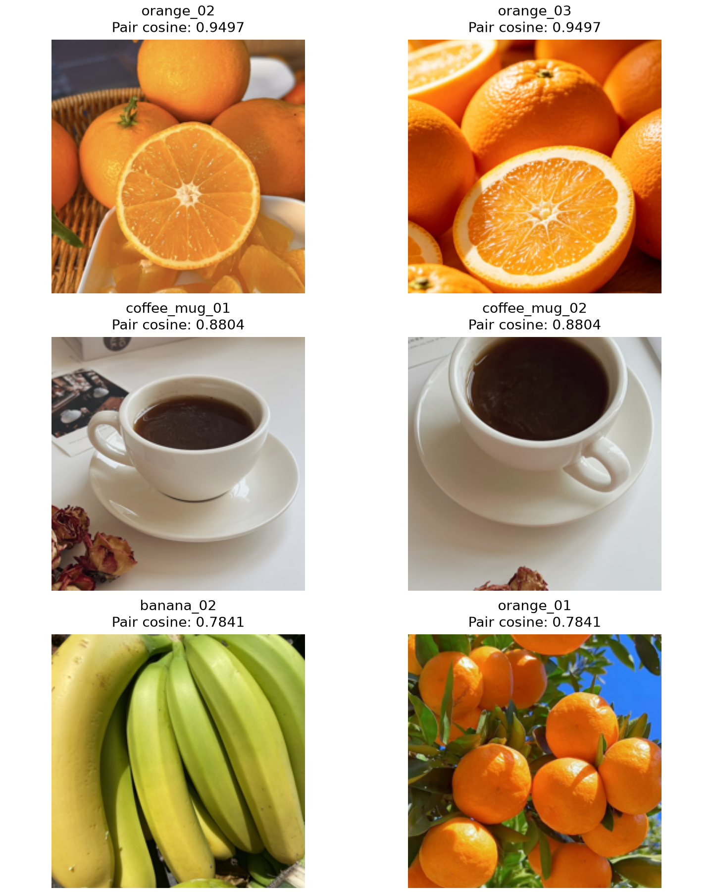
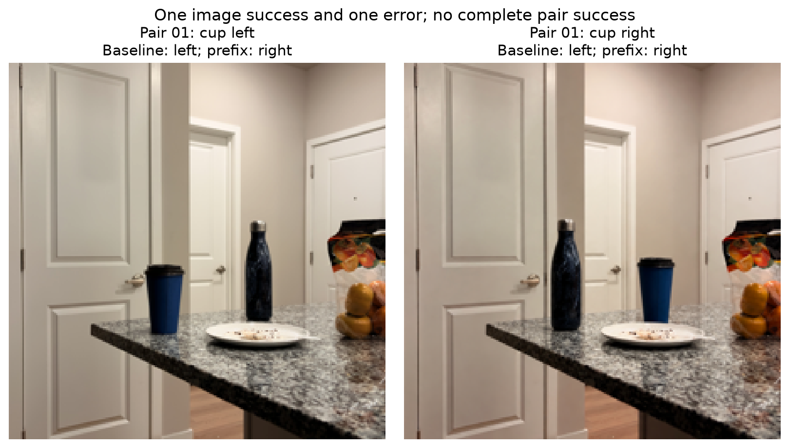
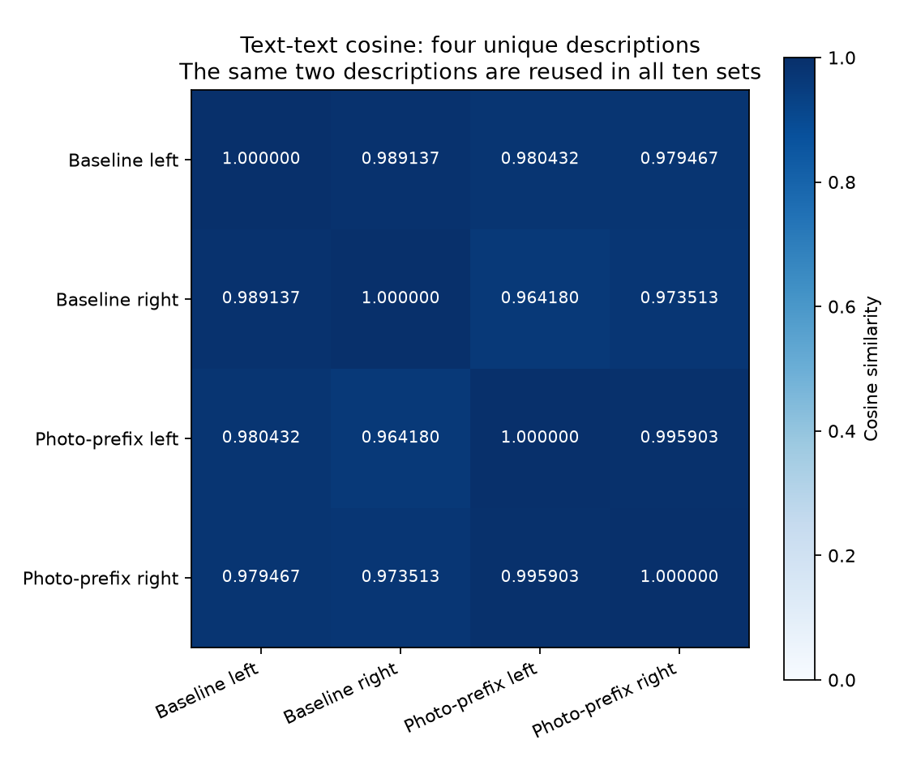

1. Setup and image collections
I ran the experiments on a CPU with a batch size of four. I used Python 3.12.14, PyTorch 2.14.1, and torchvision 0.29.1. The CLIP package was the official OpenAI implementation. I saved the model versions, image order, prompts, and raw outputs. I reused saved embeddings for later calculations.
For Parts 1 and 2, I used the same 22 images. They cover five assigned categories. I kept all 22 readable images before running the models. Three other files contained HEIF data and were left out. Each retained category still had at least four images.
Table 1. Assigned categories and exact ImageNet labels.
Category | ImageNet index | Images | ViT top-one correct |
|---|---|---|---|
banana | 954 | 4 | 4 |
orange | 950 | 4 | 4 |
coffee mug | 504 | 5 | 0 |
water bottle | 898 | 5 | 1 |
tennis ball | 852 | 4 | 3 |
I used a coffee mug, index 504, as the exact target for the coffee group. I kept this choice fixed before inference. A prediction of the cup, index 968, counted as an error. Some images show shallow cups and saucers. I need to keep that label boundary in mind when I interpret the results.
The earlier image collection includes photographs, illustrations, and bottle mockups. Some images show related scenes. The original sources and usage permissions are still missing from my records. I need to add them before submission. I do not describe these 22 images as my own photographs or as licensed material.
For Part 3, I took a separate set of 20 photographs. I used one blue lidded cup and one patterned water bottle. These photos form ten left/right comparison sets. I saved uniform 1448 x 1086 RGB PNG copies and kept the originals unchanged.
Part 1: Understanding a Pretrained Vision Transformer
Task 1
I used torchvision vit_b_16 with the IMAGENET1K_V1 weights. Its input is 224 x 224 pixels. Each patch is 16 x 16 pixels. This gives 14 patches in each direction, so there are 196 image patches. The model adds one CLS token. The sequence then has 197 tokens.
The patch function splits the image into non-overlapping pixel blocks. I checked that the blocks reconstruct the input image. This is a visual explanation of the patch layout. It is not the learned patch projection.
The learned projection maps each patch into a 768-dimensional vector. Positional embeddings provide information about token positions. The CLS token gathers information through the transformer layers. The final classifier uses its representation to predict an ImageNet category.

I found it useful to separate the pixel patches from the model vectors. A patch picture shows which pixels belong together. It does not show what the learned vector means. The positional embeddings and CLS token are also model components, not extra regions cut from the photo.
Task 2
I applied the checkpoint preprocessing to every image. It resizes the image, takes a 224 x 224 center crop, and normalizes the RGB channels. The classifier then chooses among 1,000 ImageNet labels. I recorded the top five predictions for every image. Appendix A contains the complete ranked labels.
The model got 12 of 22 images correct at top one. This is 54.55%. It included the assigned label in the top five for 20 of 22 images. This is 90.91%. I used exact target-label matches for both scores.

Bananas and oranges were all correct at top one. Tennis balls were correct in three of four cases. Water bottles were correct in one of five cases. None of the coffee images had coffee mug as its top prediction. However, all five coffee images included coffee mug in the top five.

In orange_04, the model predicted orange with a score of 94.92%. The image shows fruit among green leaves and blue sky. In orange_02, it predicted orange with a score of 90.48%. Whole fruit, a cut half, and peeled pieces are visible. These are two successes despite different presentations of the fruit.
In tennis_ball_02, the model predicted racket with a score of 72.03%. The assigned target was tennis ball. The image contains both objects, so racket is a plausible label for another object in the scene. It still counts as an error for my target. I think this example shows why target selection matters in a multi-object image.
In water_bottle_02, the model predicted hair spray with a score of 70.72%. This image is a bottle mockup. Its body is cylindrical, and the center crop removes part of the top and bottom. Shape, style, and cropping are possible explanations. I did not run a controlled test to find which factor caused the error.
I interpret the coffee results carefully. Several top labels describe the drink, such as espresso, rather than the container. This does not prove that the model cannot recognize cups. It shows that the chosen target competes with nearby ImageNet categories.
I learned that the target label affects what a correct answer means. I need to define the task before I judge the final accuracy.
The fixed classification head also limits my questions. It can return only its 1,000 labels. It cannot directly answer a new question about object counts, actions, or left and right relations.
Part 2: CLIP for Image–Text Matching and Zero-Shot Classification
Task 1
I used the pre-trained OpenAI CLIP ViT-B/32 checkpoint. Its image and text encoders both return 512-dimensional vectors. I used the same 22 images from Part 1. The five candidate labels were banana, orange, coffee mug, water bottle, and tennis ball.
I first divided each vector by its L2 length. I then used a dot product between normalized vectors. This gives cosine similarity. I multiplied the similarities by the positive learned scale from the checkpoint. This gives logits. Finally, I applied softmax across the candidate texts and selected the largest score.
The learned scale was about 100.000008. I compared my logits with the official forward output for all 22 images and all 15 texts. The largest absolute difference was 0.00004578. It was within the chosen numerical tolerance. An independent calculation from the saved raw vectors also passed.
Cosine similarity measures vector alignment. Logits are scaled scores. Softmax scores sum to one over the texts I supply. They are not calibrated probabilities that a prediction is correct. The positive scale and softmax do not change the candidate ranking.

I checked candidate dependence with water_bottle_03. Its water-bottle cosine was about 0.2403, and its logit was about 24.0335. Removing the competing coffee-mug text raised its softmax score from 19.35% to 99.77%. Its image vector, cosine, and logit stayed unchanged. I learned that a larger softmax score can come from a changed denominator.
Task 2
I compared three fixed templates. I kept the image inputs, image vectors, model weights, and candidate order unchanged. Each template used the same five labels. I used the wording literally, including "a orange" in the photo template.
Table 2. CLIP classification with the same five candidate labels.
Template | Exact wording | Correct | Accuracy |
|---|---|---|---|
Bare | {category} | 21/22 | 95.45% |
Photo | a photo of a {category} | 21/22 | 95.45% |
Showing | an image showing a {category} | 22/22 | 100.00% |
Only water_bottle_03 changed its top prediction. Bare and photo predicted coffee mug. Showing predicted water bottle. Its assigned water-bottle scores were 33.36%, 19.35%, and 62.83%. The other 21 images kept the same top prediction.


The crop of water_bottle_03 shows a tall lidded container with animal illustrations and a carrying cord. Its shape is also compatible with a tumbler. I think the boundary between water bottle and coffee mug is plausible here. The measured result shows sensitivity to these full prompts. It does not tell me which single word caused the change.
Some scores changed without changing the label. For example, water_bottle_04 stayed correct under every template. Its water-bottle scores were 97.73%, 95.56%, and 99.06%. I therefore checked both labels and scores.
This helped me separate labels from scores. A higher score does not automatically mean that the image representation became better.
Changing a prompt changes the text tokens and text vectors. It does not update model weights. Fine-tuning would require parameter updates.
CLIP scored higher than the ViT in these configured tasks. However, CLIP chose among five labels, while the ViT chose among 1,000. The ViT checkpoint was trained for supervised ImageNet classification. CLIP was pre-trained to match image-text pairs with a contrastive objective. Their training data, patch sizes, and preprocessing also differ. I cannot use these results to claim that CLIP is generally better.
Task 3
I computed a 22 x 22 matrix from the normalized CLIP image vectors. I grouped the images by their assigned categories. Each diagonal entry compares an image with itself. I excluded those entries from ranked pairs and means. There are 231 unordered pairs of different images.


Orange_02 and orange_03 had a cosine of 0.9497. Both show oranges and cut fruit. Coffee_mug_01 and coffee_mug_02 had a cosine of 0.8804. They show the same light cup and saucer in the same setting. These related scenes should not be treated as independent evidence of generalization.
The water_bottle_01 and water_bottle_02 mockups had a cosine of 0.8620. They share a bottle design and a gray rendered background. Tennis_ball_02 and tennis_ball_03 had a cosine of 0.9168. Both contain balls and racket strings. Banana_02 and banana_04 had a cosine of 0.8409, even with different backgrounds.
The highest cross-category pair was banana_02 and orange_01, with a cosine of 0.7841. They show different fruit categories. Fruit content, color, and visible plant material may help explain the similarity. I cannot separate these effects from this pair alone.
Each category had a larger within-category mean than its cross-category means. This is consistent with category information in the image vectors. The examples also suggest that appearance and context matter.
Part 3: A Controlled Study of CLIP’s Limitations
Task 1
I asked whether CLIP could distinguish a cup to the left of a water bottle from a cup to its right. Left and right refer to the viewer. My hypothesis was that the correct relational caption would have a larger cosine similarity than the opposite caption.
I took ten matched sets of photographs. Each set contains one cup-left image and one cup-right image. I used the same cup and bottle at home. Both descriptions mention both objects. Recognizing the objects alone cannot select the correct relation.
The two baseline descriptions were:
A cup is to the left of a water bottle.
A cup is to the right of a water bottle.
I checked the filename labels against the photos. I kept all 20 images. I saved the captions, scoring rules, and intervention plan before encoding. I did not remove images based on the results or search for extra prompts.
I tried to keep unrelated properties similar within each set. The controls were not perfect. Some swaps also changed depth, apparent size, and framing. Clutter and partial occlusion remained. In Pair 05, a pot handle crosses an object.
CLIP resized the inputs and took a 224 x 224 center crop. This can trim peripheral object edges. I saved the actual input arrays for inspection. The ten views reuse one object pair, so they are correlated examples.
Task 2
For each set, I computed four image-text cosines. The rows were the cup-left and cup-right photos. The columns were the left and right captions. Each image independently chose its largest cosine. I did not force the two images to choose different captions. An exact tie counted as an error. There were no exact ties.
I reported image accuracy over all 20 images. I also counted sets in which both images were correct. This second measure helps reveal whether a model responds consistently when the objects exchange sides. Appendix B gives every 2 x 2 matrix. Appendix C gives the result for every set.
Table 3. Complete results for the spatial study.
Condition | Correct images | Both correct | Predicted left | Predicted right |
|---|---|---|---|---|
Baseline | 10/20 (50%) | 0/10 sets | 20 | 0 |
Photo prefix | 10/20 (50%) | 0/10 sets | 18 | 2 |
The baseline selected left for every image. Since there were ten left and ten right targets, this rule scored 50%. Every set had one correct image and one error. I do not interpret this as stable relational understanding. I also do not call it random guessing, because the decisions had a clear directional pattern.
Checking both images in each set made this pattern clear to me. I would report image accuracy and complete-set accuracy together.

Pair 01 was the first incomplete set in manifest order. It also served as my partial-success example. No completely successful set was available. Its baseline left-photo scores were 0.280905 for left and 0.275288 for right. Its right-photo scores were 0.277331 for left and 0.273225 for right. Both photos therefore chose left.
I also compared the description vectors. The left/right text cosine was 0.989137 for baseline. It was 0.995903 with the prefix. There are only two unique captions per condition. I reused them across the ten sets. Repeating them in a larger matrix would repeat the same values.

These whole-sentence vectors are close. I think this is worth discussing because the relational meanings differ. However, the high cosine does not prove that CLIP ignores left and right. It also does not identify the cause of the image errors. I did not include unrelated-object text controls.
Task 3
I tested one possible explanation: missing photo context might affect matching. I added the same phrase, in this photo, to each description. I also lowercased the following article. The rest of each sentence stayed the same.
In this photo, a cup is to the left of a water bottle.
In this photo, a cup is to the right of a water bottle.
I kept the images, image vectors, weights, preprocessing, candidate order, and scoring fixed. I encoded the images once for both conditions. This isolates the effect of these two caption formulations on the fixed collection. It does not isolate a general mechanism of spatial understanding.
Image accuracy stayed at 50%. The number of completely correct sets stayed at zero. Only two predictions changed, both in Pair 01. One image changed from correct to incorrect. The other changed from incorrect to correct. The remaining 18 decisions stayed the same.
The prefix changed scores and individual decisions, but it gave no overall accuracy benefit. My proposed improvement was not supported here. This does not mean that every possible wording change would be ineffective.
Small initial score gaps and general text-vector shifts are alternative explanations for the changed decisions. Camera differences, depth, clutter, and crop effects also limit the study. I would use more object pairs and more consistent camera positions in a stronger follow-up. I would also use held-out scenes to test whether any improvement transfers.
I checked the results independently from the saved raw vectors. The checks covered all 20 inputs, 40 decisions, pair matrices, and metrics. Reversing the candidate columns did not change the decoded labels. A separate official-forward sanity check covered one image and all four texts. I keep that smaller check separate from the full cached-vector verification.
Appendix A. All ViT top-five predictions
The labels below are in rank order. The first label is the top-one prediction. I kept all 22 images in the accuracy calculation. Scores for all five predictions are saved with the original experiment outputs.
Image ID | Assigned target | Top-five labels, highest first |
|---|---|---|
banana_01 | banana | banana; paintbrush; buckle; scabbard; hook |
banana_02 | banana | banana; orange; grocery store; lemon; pineapple |
banana_03 | banana | banana; orange; lemon; shopping basket; grocery store |
banana_04 | banana | banana; greenhouse; grocery store; pot; patio |
orange_01 | orange | orange; lemon; banana; grocery store; ping-pong ball |
orange_02 | orange | orange; lemon; banana; grocery store; hamper |
orange_03 | orange | orange; lemon; banana; grocery store; rubber eraser |
orange_04 | orange | orange; lemon; grocery store; pot; monarch |
coffee_mug_01 | coffee mug | espresso; cup; consomme; coffee mug; chocolate sauce |
coffee_mug_02 | coffee mug | consomme; espresso; cup; chocolate sauce; coffee mug |
coffee_mug_03 | coffee mug | espresso; cup; coffee mug; tray; red wine |
coffee_mug_04 | coffee mug | espresso; cup; eggnog; coffee mug; Band Aid |
coffee_mug_05 | coffee mug | cup; coffee mug; soup bowl; crossword puzzle; menu |
water_bottle_01 | water bottle | water bottle; perfume; radio; hair spray; lighter |
water_bottle_02 | water bottle | hair spray; water bottle; perfume; lotion; water jug |
water_bottle_03 | water bottle | pill bottle; water jug; water bottle; bucket; cup |
water_bottle_04 | water bottle | milk can; vacuum; hook; knot; rain barrel |
water_bottle_05 | water bottle | ashcan; water jug; bucket; cup; tennis ball |
tennis_ball_01 | tennis ball | tennis ball; racket; golf ball; Granny Smith; Brittany spaniel |
tennis_ball_02 | tennis ball | racket; tennis ball; Granny Smith; strainer; bucket |
tennis_ball_03 | tennis ball | tennis ball; racket; great white shark; Granny Smith; golf ball |
tennis_ball_04 | tennis ball | tennis ball; racket; great white shark; wing; golf ball |
Appendix B. All spatial 2 x 2 matrices
Each row below contains one complete matrix. LL is the left image with left text. LR is the left image with right text. RL is the right image with left text. RR is the right image with right text. Values are rounded to six decimals. Decisions use the unrounded values. Prefix means the photo-prefix condition.
Condition | Pair | LL | LR | RL | RR |
|---|---|---|---|---|---|
Baseline | 01 | 0.280905 | 0.275288 | 0.277331 | 0.273225 |
Baseline | 02 | 0.306839 | 0.304802 | 0.293483 | 0.292698 |
Baseline | 03 | 0.280066 | 0.278308 | 0.269619 | 0.267137 |
Baseline | 04 | 0.299016 | 0.293597 | 0.303385 | 0.297980 |
Baseline | 05 | 0.297796 | 0.297420 | 0.294761 | 0.290046 |
Baseline | 06 | 0.295442 | 0.292126 | 0.303796 | 0.303186 |
Baseline | 07 | 0.305722 | 0.292904 | 0.307682 | 0.298420 |
Baseline | 08 | 0.316155 | 0.310963 | 0.323638 | 0.314110 |
Baseline | 09 | 0.292785 | 0.288112 | 0.315545 | 0.306493 |
Baseline | 10 | 0.319533 | 0.310793 | 0.311691 | 0.306334 |
Prefix | 01 | 0.284023 | 0.284707 | 0.282035 | 0.282858 |
Prefix | 02 | 0.307003 | 0.304728 | 0.291342 | 0.289435 |
Prefix | 03 | 0.276869 | 0.275166 | 0.266420 | 0.263911 |
Prefix | 04 | 0.291756 | 0.288462 | 0.296644 | 0.292758 |
Prefix | 05 | 0.294539 | 0.293291 | 0.287614 | 0.285487 |
Prefix | 06 | 0.292515 | 0.289492 | 0.298834 | 0.298113 |
Prefix | 07 | 0.300892 | 0.297099 | 0.302945 | 0.300383 |
Prefix | 08 | 0.309957 | 0.306271 | 0.316764 | 0.311182 |
Prefix | 09 | 0.287842 | 0.285585 | 0.311907 | 0.307060 |
Prefix | 10 | 0.313603 | 0.310309 | 0.306298 | 0.304728 |
Appendix C. Every spatial set
Both conditions produced exactly one correct image per set. None had both images correct. Pair 01 is the only set with changed image decisions.
Pair | Baseline images correct | Prefix images correct |
|---|---|---|
01 | 1/2 | 1/2 |
02 | 1/2 | 1/2 |
03 | 1/2 | 1/2 |
04 | 1/2 | 1/2 |
05 | 1/2 | 1/2 |
06 | 1/2 | 1/2 |
07 | 1/2 | 1/2 |
08 | 1/2 | 1/2 |
09 | 1/2 | 1/2 |
10 | 1/2 | 1/2 |
Appendix D. Reproducibility details
I used a CPU, batch size four, and fixed model weights in all runs. The ViT preprocessing used resize 256, center crop 224, and checkpoint normalization. CLIP used bicubic resize to 224, center crop 224, RGB conversion, and its checkpoint normalization. EXIF orientation was applied before preprocessing.
The saved Part 1 and Part 2 manifests contain the same image identities and labels. Part 3 uses spatial_pairs_v2_uniform_1448x1086. The source copies and older outputs remain available. The spatial similarities were calculated in float64 from float32 encoder outputs.
Software versions: Python 3.12.14; torch 2.14.1; torchvision 0.29.1; NumPy 2.5.4; Pillow 12.3.0; Matplotlib 3.11.2. The OpenAI CLIP source commit was d05afc436d78f1c48dc0dbf8e5980a9d471f35f6.